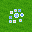
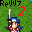
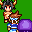
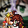
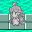
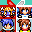
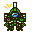
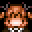
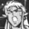
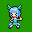

作品一覧
 アイスさん探訪記
アイスさん探訪記- #1 ✅
- 89
ドリームメタモルかくれんぼ
- #2 ✅
- 雨水葉月
乙女座の聖女Ver.2.0
- #3 ✅
- はぴどら
海
- #4
- ポンピリウス
カマソ5世と20人の眷属
- #5 ✅
- とっとこ派手太郎
異説precious~まなざし~
- #6 ✅
- キチガイ地獄外道祭文
 2005～22キャラ歴史まとめ
2005～22キャラ歴史まとめ- #7 ✅
- ヒマーネスI
-
再編版 消えぬ煙の魔女
- #8 ✅
- かすていら
-
寄集聖人
- #9 ✅
- 鷹
キャプテンもしも
- #10 ✅
- あじたま
人斬りと正義の噺
- #11 ✅
- 徳明
R-18 ヒーロー敗北！ 強敵アイドル怪人パスタ出現！
- #12 ✅
- ナナメティックスレイヤー
-
やみっちクエスト
- #13 ✅
- ぬ
アーケチの事件簿2 Re:大魔王殺害事件
- #14
- 悲しきツクールDSマシン
アーケンが書きたかっただけ
- #15 ✅
- リガル
Monochrome -少女の旅-
- #16 ✅
- みどり
Magic Bullet
- #17 ✅
- 雷塵
MOSHIMO PARTY
- #18 ✅
- 五つ葉

もしも楽園が魔王把握- #19 ✅
- あきこ
 タッカナ・ワ・アニマ
タッカナ・ワ・アニマ- #20 ✅
- ナラネーヨ

Reリリア2 体験版- #21 ✅
- hanol
-
BLOODY BULLET β
- #22 ✅
- 紅夏

勇者と聖剣の伝説２- #23 ✅
- 魔禁胆
漫画研究部の激エロ活動内容
- #24 ✅
- のべっくす
まじょっこロット～おはようウォーター～
- #25 ✅
- クアアタ

狂詩性ブラックサンダーＲ- #26 ✅
- たんち
-
狂詩性ブラックサンダーC
- #27 ✅
- だんぢ
幼姦マンと語るAIイラスト生成
- #28 ✅
- SSS
霧の森の魔女/陽だまりの教会
- #29 ✅
- 名雲きつね
-
そして勇者は眠りにつく
- #30 ✅
- よもぎもち

WindI Under the Fluorescent Green- #31 ✅
- Aomatu_Taglia
 何かをみるひと
何かをみるひと- #32 ✅
- HOT-W
-
100万回死んだウィンディ
- #33 ✅
- 死に体

ワンダフユシンワ- #34 ✅
- 華想研
 10日で作りました。
10日で作りました。- #35 ✅
- 2022紅白管理人
-
オレの考えたゲームの設定出す
- #36 ✅
- ヌッ！ダグバ・ゼバ

ジーム＝アイゼンの５０人把握- #37 ✅
- Ｘ-羅仁宇
-
管理者権限であとからねじ曲げます
- #38
- 2022紅白管理人(本物)
ファイナルウィンディネーション
- #39 ✅
- えんがわ
キュアーⅠのデトックスラジオ2022
- #40 ✅
- 黒糖まんじゅう
-
いにしえのりんごゲー
- #41 ✅
- あけもん
もしも牛の物語2022年
- #42 ✅
- 魔城プログラム
チングリッサー
- #43 ✅
- 大熊重信
マタニティー長距離ドライバー光江3
- #44 ✅
- 畳の上の水蓮
わー!!TERI～無限軽トラック編～
- #45 ✅
- kanetare
-
ＲＴＰｖｓ３Ｄモデル
- #46 ✅
- 伝六館館主
-
水煮対キャンセルさん
- #47 ✅
- おととい

やみいじめ- #48 ✅
- ちゃかなん

お気持ち表明- #49 ✅
- 女体化ダークメカアレックス
-
それでも果てるまで
- #50 ✅
- funyara。
-
（仮）カナエールタワーDEMO版
- #51 ✅
- アップル
世界は緑に包まれた
- #52 ✅
- ろしにょる
HELLVIPPER
- #53 ✅
- ワシミミズク
-
自作ツール"Effect Conductor"の紹介見るゲ
- #54 ✅
- lpre_ys
-
マウスクラッシャーV
- #55 ✅
- めざ
-
Fake and Posthumous Ksg
- #56 ✅
- 偽死神五世ちゃんかわいい
 どーに交わればギャオくなる
どーに交わればギャオくなる- #57 ✅
- ろーぜんべるく
ボエロの世界
- #58 ✅
- ボエロい人

鏡の中のミラージュ 前編- #59 ✅
- イカスミ
-
破壊大帝ゴーメ・スーン
- #60 ✅
- 莉琉
FF9 THE AFTER YEARS_DEMO
- #61 ✅
- PON
2019-2020年キャラ 全員把握！！
- #62 ✅
- 富良田 "Overwork" レイ
-
すっぴ・ざ・ろっく！
- #63
- 唐井きばり
Steam版2003Maniacs実験成果
- #64 ✅
- F-man
-
VRoid・VRMファイルで遊ぼう！
- #65 ✅
- 大富豪の大貧民役
３つの小さな冒険
- #66 ✅
- （R）DU
 オカリンクエスト（仮）体験版
オカリンクエスト（仮）体験版- #67 ✅
- しーどん
男の娘アグネ脱出（仮）
- #68 ✅
- 大地のルイボス
-
もしもアニメ第1話だったら
- #69
- ライト
-
しぃちゃん馬主になる
- #70 ✅
- 呂宋兄弟
 地獄跳鳥おぼなす
地獄跳鳥おぼなす- #71 ✅
- 月旨公
音符マーク
- #72 ✅
- ◆2aLlGIkY8s